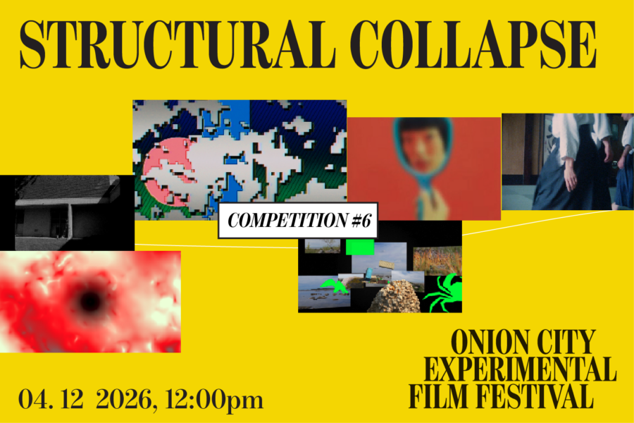

Onion City: Structural Collapse
Break down with STRUCTURAL COLLAPSE, a lineup of works that burst apart, topple, freak out, undo, disintegrate, and at times sow chaos. Pixels explode, the internet hemorrhages, institutions shut down, and language fails to cohere. We walk through the funhouse, mess up our ABCs, learn to fall, and punch the clock harder than we ever have before.
Lineup:
A is for Apple | Lillian Canright | Germany | 2025 | 8 min | World Festival Premiere
Cobwebs Spun Back & Forth In The Sky | Nick Vyssotsky | US | 2021 | 18 min | Chicago Festival Premiere
Acetone Reality | Michael Bell-Smith and Sara Magenheimer | US | 2025 | 13 min | Chicago Festival Premiere
My Structuralist Film | Angelo Madsen | US | 2026 | 6 min | World Festival Premiere
Chew This! | Delphyne Panther-Brutzkus | US | 2025 | 2 min
Exquisite Corpse | Karl Kaisel | Estonia | 2026 | 8 min | World Festival Premiere